PRAD · RNA-seq: contagens brutas (GDC)
STAR - Counts (GENCODE v36) · gerado em 22/10/2026 03:05
51,3 Mtamanho mediano
0,35dispersão mediana α
17.007genes
498amostras tumorais
52amostras normais
0,0%valores faltantes
Fonte: API do GDC (STAR - Counts)
Principais resultados
- Bibliotecas de 18,8 a 111,3 milhões de leituras (mediana 51,3). 42.859 de 60.660 features têm leitura em pelo menos 10% das amostras.
- A variância cresce bem acima da média: a dispersão mediana da binomial negativa é α=0.35 (para features com média > 10). Isso descarta um modelo Poisson e indica binomial negativa (ou Poisson-lognormal) na verossimilhança.
- A fração de zeros é compatível com a binomial negativa (diferença mediana -0,5%); inflação de zeros não parece necessária.
- Em média 11,5% das leituras de cada amostra vão para as 20 features mais abundantes (KLK3, MT-CO1, MT-ND4).
- Genes codificadores de proteína recebem 97,3% das leituras (mediana).
- 17.007 genes medidos em 550 amostras (498 tumorais e 52 normais); 0,0% dos valores estão faltando.
- Os dois primeiros componentes principais explicam 20,5% e 7,6% da variância das features mais variáveis.
- Correlação mediana entre amostras: 0,72.
- Amostras com correlação muito abaixo das demais (possíveis outliers técnicos): TCGA-HC-7738-11, TCGA-HC-7745-11, TCGA-HC-7737-11, TCGA-HC-7747-11, TCGA-HC-7211-11, TCGA-HC-7740-11, TCGA-HC-8258-11, TCGA-XQ-A8TA-01.
- Tumor x normal: 12103 genes diferentes com FDR < 5% (6852 maiores no tumor, 5251 maiores no normal; 52 pacientes têm o par tumor-normal).
- Mais aumentados no tumor: ENSG00000119919.11, ENSG00000227392.2, ENSG00000164175.15, ENSG00000163794.6, ENSG00000234493.4, ENSG00000223400.1, ENSG00000260896.6, ENSG00000234965.2.
- Mais reduzidos no tumor: ENSG00000102007.11, ENSG00000150281.7, ENSG00000066468.23, ENSG00000065154.12, ENSG00000244509.4, ENSG00000170271.11, ENSG00000109819.9, ENSG00000162493.16.
- Associações clínicas com p < 0,05 nos componentes principais: PC3 com idade (p=3.1e-05).
Biblioteca
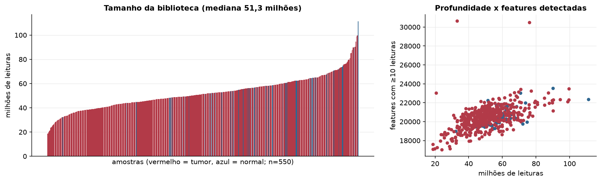
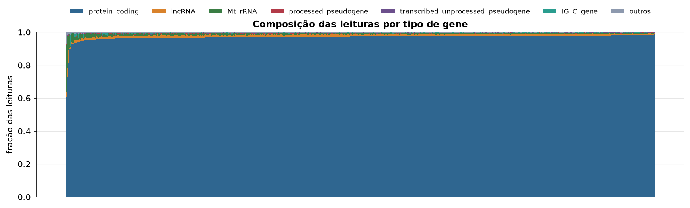
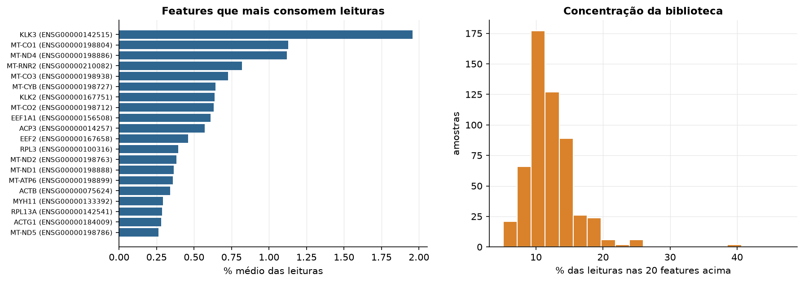
Sobredispersão e zeros
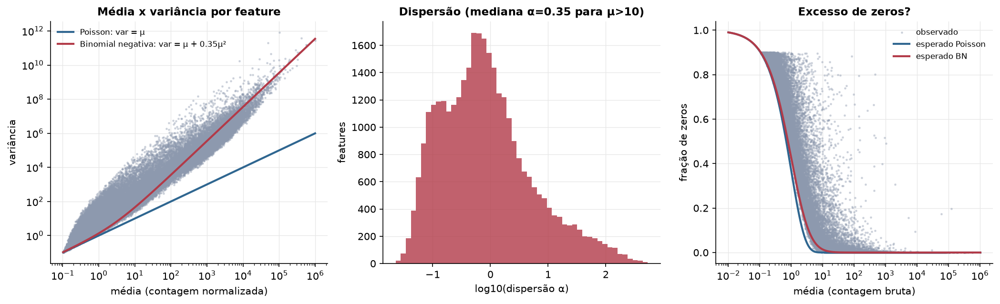
Exploração em log2(CPM+1)
Features com CPM ≥ 1 em pelo menos 20% das amostras (17.007 features).
Distribuição dos valores
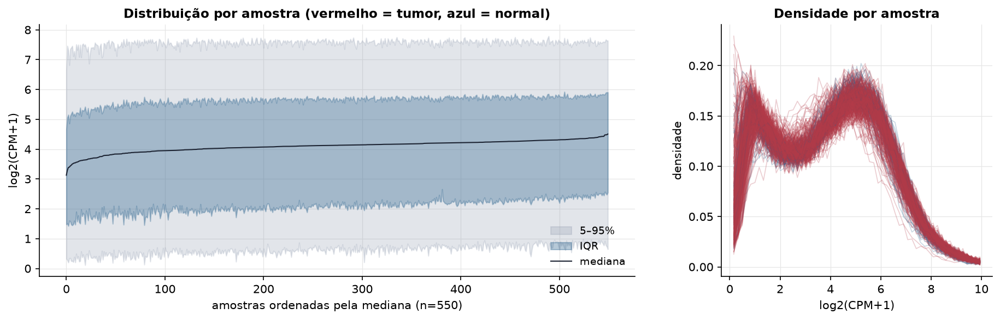
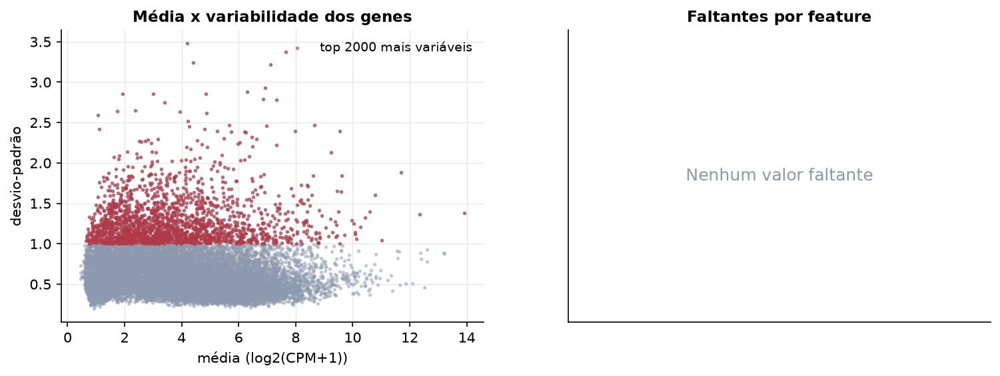
Estrutura das amostras
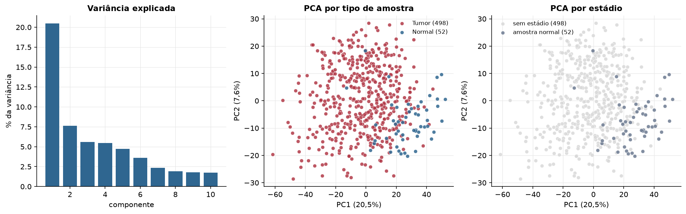
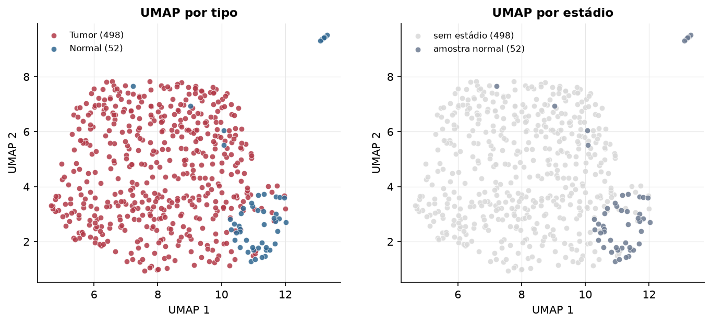
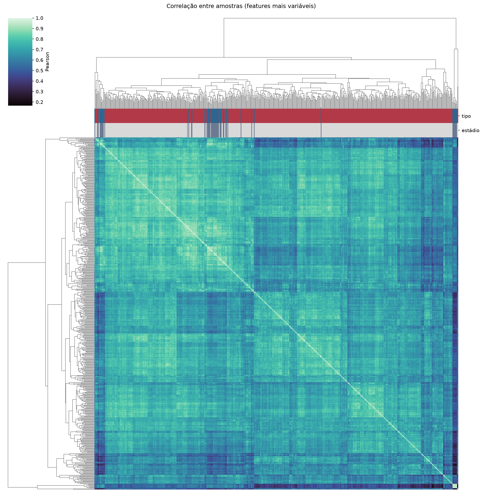
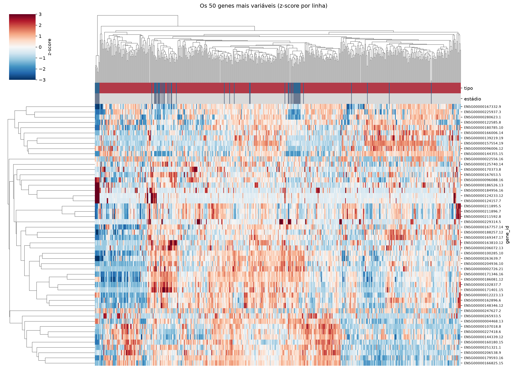
Tumor x normal
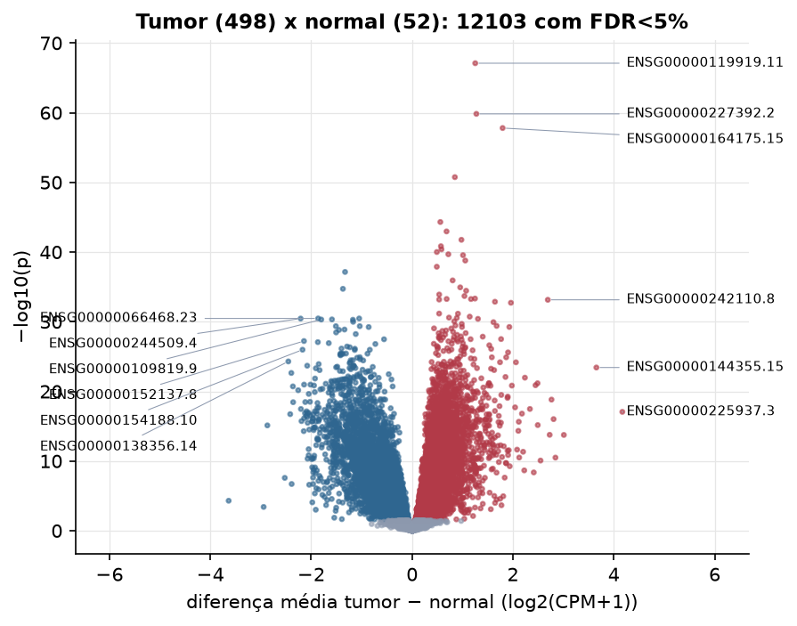
Features mais diferentes entre tumor e normal
| gene_id | diferenca_tumor_menos_normal | t | p | fdr |
|---|---|---|---|---|
| ENSG00000119919.11 | 1.253 | 24.567 | 7.93e-68 | 1.35e-63 |
| ENSG00000227392.2 | 1.275 | 23.644 | 1.47e-60 | 1.25e-56 |
| ENSG00000164175.15 | 1.796 | 20.226 | 1.59e-58 | 9.01e-55 |
| ENSG00000163794.6 | 0.849 | 21.476 | 1.78e-51 | 7.57e-48 |
| ENSG00000234493.4 | 0.561 | 16.023 | 4.89e-45 | 1.66e-41 |
| ENSG00000223400.1 | 0.684 | 16.726 | 1.1e-43 | 3.11e-40 |
| ENSG00000260896.6 | 0.979 | 15.7 | 1.75e-42 | 4.25e-39 |
| ENSG00000234965.2 | 0.572 | 15.541 | 1.46e-41 | 3.11e-38 |
| ENSG00000198217.4 | 0.583 | 16.141 | 4.09e-41 | 7.72e-38 |
| ENSG00000269388.1 | 0.492 | 17.494 | 9.9e-41 | 1.68e-37 |
| ENSG00000266402.3 | 0.72 | 17.274 | 2.09e-40 | 3.23e-37 |
| ENSG00000185615.16 | 1.01 | 14.71 | 2.82e-40 | 3.99e-37 |
| ENSG00000136944.19 | 1.055 | 17.434 | 1.66e-39 | 2.18e-36 |
| ENSG00000286989.1 | 0.49 | 16.782 | 1.29e-38 | 1.56e-35 |
| ENSG00000102007.11 | -1.329 | -20.12 | 7.17e-38 | 8.13e-35 |
| ENSG00000104899.8 | 0.805 | 14.3 | 1.18e-36 | 1.25e-33 |
| ENSG00000223802.8 | 0.955 | 16.176 | 1.17e-35 | 1.18e-32 |
| ENSG00000150281.7 | -1.371 | -18.619 | 1.9e-35 | 1.79e-32 |
| ENSG00000272732.1 | 1.072 | 17.1 | 3.59e-35 | 3.22e-32 |
| ENSG00000229332.2 | 0.538 | 13.401 | 1.26e-34 | 1.08e-31 |
| ENSG00000251493.5 | 1.039 | 15.763 | 2.05e-34 | 1.66e-31 |
| ENSG00000272894.5 | 1.247 | 17.225 | 4.74e-34 | 3.67e-31 |
| ENSG00000148832.16 | 0.686 | 15.881 | 5.48e-34 | 3.96e-31 |
| ENSG00000181378.14 | 1.168 | 18.098 | 5.58e-34 | 3.96e-31 |
| ENSG00000196366.3 | 0.537 | 16.312 | 6.6e-34 | 4.49e-31 |
| ENSG00000242110.8 | 2.692 | 19.114 | 7.19e-34 | 4.7e-31 |
| ENSG00000280927.1 | 1.644 | 17.859 | 1.36e-33 | 8.58e-31 |
| ENSG00000286027.1 | 1.96 | 18.105 | 1.92e-33 | 1.16e-30 |
| ENSG00000204612.1 | 0.537 | 12.79 | 6.81e-32 | 4e-29 |
| ENSG00000232806.1 | 0.91 | 15.64 | 7.06e-32 | 4e-29 |
Associação com variáveis clínicas
p-valores da associação dos três primeiros componentes principais (só tumores) com estádio (Kruskal-Wallis), sexo (Mann-Whitney), idade (Spearman) e sobrevida global (Cox univariado).
| estádio (Kruskal) | sexo (Mann-Whitney) | idade (Spearman) | sobrevida OS (Cox) | |
|---|---|---|---|---|
| PC1 (19,1%) | 0.927 | 0.223 | ||
| PC2 (8,0%) | 0.582 | 0.677 | ||
| PC3 (5,8%) | 3.08e-05 | 0.541 |